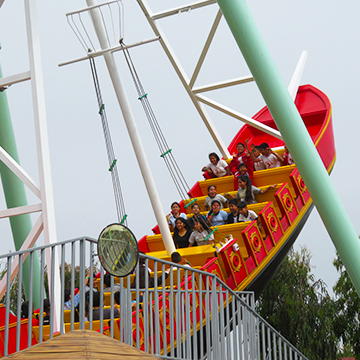
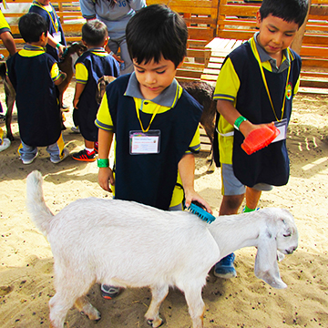
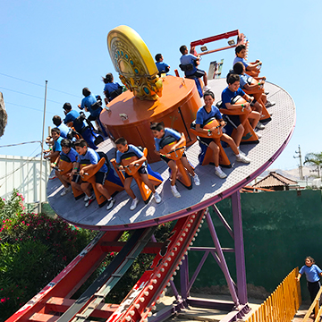

PASEOS ESCOLARES

Granja - Escuela Interactiva. Permite a nuestros visitantes participar, opinar, aprender y actuar en todos nuestros talleres. Buscamos que nuestros niños interactúen con la naturaleza y todos sus elementos de forma natural, conociendo a los animales de granja y alimentando a cada uno según su especie.
Talleres - Programa Educativo. Nuestro proyecto de trabajo tiene como objetivo fundamental el ofrecer a los niños un conjunto de experiencias interactivas en un medio natural, que les permita vivir una experiencia inolvidable, acercándo a los niños a la comprensión y el uso responsable de recursos naturales.
Toda experiencia crea la conciencia autogestionaria de todos los procesos de granja y su utilidad en su vida diaria. Mostraremos y explicaremos la razón de nuestros recintos, donde buscamos un claro bienestar animal, con el objetivo principal de crear conciencia y valoración hacia los animales y el espíritu conservacionista hacia los recursos naturales.
UN MUNDO MÁGICO DE DIVERSIÓN Y APRENDIZAJE

IMPORTANTE:
- Las reservaciones son con un mínimo de 15 niños.
- Es indispensable el uso del buzo, mandil, polo y/o fotocheck del centro educativo.
- Toda la información detallada sobre los paquetes escolares (talleres, juegos, horarios, alimentos, bebidas y otras observaciones) se encuentran en el Contrato de Reservación y Protocolo de Visitas Escolares.
- Para las reservaciones y visitas es indispensable enviarnos el Contrato de Reservación firmado y sellado. El mismo que se envía al momento de solicitarlo. Máximo 1 semana antes de su visita.
- Para mayores informes, por favor comuníquese al 748-1244, al 996 319 045 o a colegios@lagranjavilla.com
- Promociones Escolares válidas de lunes a viernes hasta la tercera semana de noviembre de 2023.
- No válido en feriados ni durante la semana de socios. Previa coordinación.



Para mayor información comunicate con nosotros:
Otros Servicios

Eventos Corporativos

Visitas Familiares